Desarrollo de una API REST para gestión de recomendaciones con Slim Framework y Neo4j#
Manuel Torres
Bases de datos a gran escala. Máster en Ingeniería Informática. Universidad de Almería
Resumen#
En una plataforma de comercio electrónico, los usuarios interactúan constantemente con productos y con otros usuarios. Compran artículos, dejan valoraciones y siguen a otras personas con intereses similares. Para mejorar la experiencia de compra y fomentar la fidelización, es fundamental ofrecer recomendaciones personalizadas basadas en estos patrones de comportamiento. Empresas como Amazon, Netflix o Spotify han demostrado que un buen motor de recomendaciones puede marcar la diferencia entre un cliente ocasional y un usuario recurrente. En este tutorial se desarrollará una API REST basada en Neo4j, una base de datos orientada a grafos que modela datos de manera natural como nodos y relaciones. Con esta API, se podrá recomendar productos según las compras previas de un usuario, sugerir productos populares en la red de contactos de un usuario y conocer los seguidores de un usuario y cómo sus intereses pueden influir en sus decisiones de compra. Neo4j es ideal para este tipo de problemas porque permite recorrer conexiones en el grafo de manera eficiente, sin necesidad de realizar múltiples JOINs como en una base de datos relacional. Esto lo convierte en la mejor opción cuando se trata de analizar relaciones entre usuarios y productos en tiempo real.
Desarrollar una API REST utilizando Slim Framework y Neo4j para gestionar recomendaciones de productos.
Configurar el entorno de desarrollo utilizando Docker y Docker Compose.
Implementar endpoints para la gestión de usuarios, productos e interacciones.
Crear un sistema de recomendaciones personalizadas basado en las interacciones de los usuarios.
Probar la API REST utilizando herramientas como Postman.
Tip
Disponible el repositorio de GitHub, window=”_blank” con el código fuente de la API REST.
Introducción#
En el contexto del comercio electrónico, la personalización es la clave para mejorar la experiencia del usuario y aumentar la fidelización. Empresas como Amazon, Netflix o Spotify han demostrado que un buen motor de recomendaciones puede marcar la diferencia entre un cliente ocasional y un usuario recurrente.
Imagina que entras a una tienda online y, en lugar de perder tiempo navegando entre miles de productos, encuentras inmediatamente artículos que te interesan. O que puedes descubrir qué productos están comprando personas con gustos similares a los tuyos. Esto es posible gracias a los motores de recomendación basados en grafos, que permiten analizar relaciones complejas entre usuarios, productos y categorías de una manera que las bases de datos tradicionales no pueden.
En este tutorial se desarrollará una API REST basada en Neo4j, una base de datos orientada a grafos que modela datos de manera natural como nodos y relaciones. Con esta API, se podrá:
Recomendar productos según las compras previas de un usuario.
Sugerir productos populares en la red de contactos de un usuario.
Conocer los seguidores de un usuario y cómo sus intereses pueden influir en sus decisiones de compra.
Neo4j es ideal para este tipo de problemas porque permite recorrer conexiones en el grafo de manera eficiente, sin necesidad de realizar múltiples JOINs como en una base de datos relacional. Esto lo convierte en la mejor opción cuando se trata de analizar relaciones entre usuarios y productos en tiempo real.
Descripción del problema#
En este tutorial se va a desarrollar una API REST utilizando Neo4j para desarrollar un motor de recomendaciones que aproveche la estructura de grafos para analizar las relaciones entre usuarios y productos. A diferencia de los enfoques tradicionales basados únicamente en datos transaccionales (como compras o clics), este sistema utilizará la red de conexiones entre usuarios y sus interacciones con los productos para generar sugerencias más relevantes. La API REST debe permitir:
Recomendar productos a un usuario en función de sus compras previas y de lo que han adquirido personas con intereses similares.
Obtener productos populares dentro de la red de contactos del usuario, sugiriendo artículos comprados por amigos o seguidores.
Identificar seguidores de un usuario, lo que permite construir estrategias de recomendación basadas en influencia social.
Configuración del entorno de desarrollo#
Para configurar el entorno de desarrollo de la API REST, utilizaremos Docker y Docker Compose. El archivo docker-compose.yml define los servicios necesarios para ejecutar la aplicación, incluyendo MongoDBNeo4j, PHP con Slim y Nginx.
A continuación se muestra el contenido del archivo docker-compose.yml:
version: "3.8"
services:
neo4j:
container_name: neo4j
image: neo4j:5.5.0
restart: always
ports:
- 7474:7474
- 7687:7687
volumes:
- ./neo4j-data:/data/
environment:
NEO4J_AUTH: "neo4j/mypassword"
php:
container_name: slim_php
build:
context: ./docker/php
ports:
- "9000:9000"
volumes:
- .:/var/www/slim_app
command: >
sh -c "composer install --working-dir=/var/www/slim_app && php-fpm"
nginx:
container_name: slim_nginx
image: nginx:stable-alpine
ports:
- "8084:80"
volumes:
- .:/var/www/slim_app
- ./docker/nginx/default.conf:/etc/nginx/conf.d/default.conf
depends_on:
- php
Servicios#
El archivo docker-compose.yml define tres servicios:
neo4j: Servicio de base de datos de grafos Neo4j que se utiliza para almancenar los datos de la aplicación. Se expone en los puertos 7474 (HTTP) y 7687 (Bolt). La base de datos se almacena en un volumen local
neo4j-datay se configura con un usuarioneo4jy una contraseñamypassword.php: Servicio que ejecuta la aplicación Slim. Se construye a partir del contexto
./docker/phpy se expone en el puerto9000. Incluye un volumen que mapea el directorio actual al directorio de la aplicación Slim. El código fuente de la aplicación Slim se encuentra en el directorio./public.nginx: Servidor web que sirve la aplicación Slim. Se expone en el puerto
8080y depende del servicio PHP.
Instrucciones de instalación#
Para instalar y ejecutar la aplicación, sigue estos pasos:
Clona el repositorio:
git clone https://github.com/ualmtorres/SlimNeo4jRecomendaciones.git cd SlimNeo4jRecomendaciones
Ejecuta Docker Compose para levantar los servicios:
docker-compose up -d
Accede a la documentación de la API REST en
http://localhost:8080.Accede a los endpoints de la API REST en
http://localhost:8080/api.
Con estos pasos, tendrás el entorno de desarrollo configurado y la API REST en funcionamiento.
Uso básico de la extensión Neo4j para PHP#
La extensión de Neo4j para PHP permite la conexión a una base de datos Neo4j desde un script PHP. La extensión se puede instalar a través de Composer y se puede utilizar para realizar operaciones básicas como la creación de nodos, relaciones, consultas y transacciones.
Conexión a Neo4j#
Para conectar la aplicación Slim a una base de datos Neo4j, utilizamos el driver de Laudis Neo4j. Este driver permite interactuar con la base de datos Neo4j utilizando PHP de manera sencilla y eficiente.
Instalación del driver#
Para instalar el driver de Laudis Neo4j, utilizamos Composer. Ejecuta el siguiente comando en la raíz de tu proyecto:
composer require laudis/neo4j-php-client
Configuración de la conexión#
Para conectarse a una base de datos de Neo4j, primero necesitamos incluir las clases necesarias y luego configurar la conexión con el servidor de Neo4j. Como clases necesarias, utilizamos ClientBuilder y Authenticate del driver PHP para Neo4j. La conexión se realiza mediante el método create() de ClientBuilder y se configura con el método withDriver(). Existen varios tipos de drivers, como bolt, neo4j y https``, que se pueden utilizar para conectarse a la base de datos. En este caso se usan los drivers boltyneo4j. En cualqiuer caso, se debe especificar la URL del servidor de Neo4j, el puerto y las credenciales de autenticación. Si se especificn varios drivers, se puede elegir uno por defecto con el método withDefaultDriver(). Finalmente, se construye el cliente con el método build()`.
El siguiente código muestra un ejemplo de cómo conectarse a una base de datos de Neo4j. Muestra os formas de pasar las credenciales de autenticación al método withDriver(), ya sea como parte de la URL o mediante un objeto de autenticación.
Protocolos de conexión a Neo4j
Neo4j soporta varios protocolos de conexión, como Bolt, Neo4j y HTTP.
Bolt: Es el protocolo original de Neo4j. Es un protocolo de conexión optimizado para el rendimiento y la eficiencia. Utiliza un formato binario para la transferencia de datos. Usa WebSockets para mantener una conexión estable, reduciendo la sobrecarga de establecer conexiones repetidas. Soporta transacciones permitiendo la ejecución de múltiples consultas en una sola transacción. Es ideal para aplicaciones que requieren un alto rendimiento y una baja latencia.Neo4j: Este protocolo es parte del protocolo Bolt y añade soporte para la conexión con clusters de Neo4j manejando la información de enrutamiento y failover. Es ideal para aplicaciones que requieren alta disponibilidad y tolerancia a fallos.HTTP: Está basado en REST y permite enviar consultas Cypher a través de peticiones HTTP. Es más lento que Bolt y Neo4j, pero es más sencillo de usar y es compatible con cualquier cliente HTTP. Es ideal para aplicaciones que requieren una conexión sencilla y no requieren un alto rendimiento.
<?php
...
use \Laudis\Neo4j\ClientBuilder;
use \Laudis\Neo4j\Authentication\Authenticate;
// Conectar a Neo4j
$servername = "neo4j";
$username = "neo4j";
$password = "mypassword";
$database = "recommendations";
$auth = Authenticate::basic($username, $password);
$client = ClientBuilder::create()
->withDriver('bolt', "bolt://$username:$password@$servername")
->withDriver('neo4j', "neo4j://$servername:7687", $auth)
->withDefaultDriver('neo4j')
->build();
...
Operaciones básicas#
Con el uso de este driver, podemos realizar operaciones básicas en una base de datos de Neo4j, como la creación de nodos, relaciones, consultas y transacciones. Normalmente, las operaciones se realizan mediante el método run() del cliente, que recibe una consulta Cypher y devuelve un resultado. El resultado puede ser un array de nodos, relaciones o propiedades, dependiendo de la consulta.
El método run()#
La clave para interactuar con una base de datos de Neo4j utilizando el driver para Neo4j es el método run(). Este método permite ejecutar consultas Cypher en la base de datos y obtener los resultados. Devuelve un objeto Result que contiene los resultados de la consulta.
La sintaxis del método run() es la siguiente:
$result = $client->run($query, $parameters);
Donde $query es la consulta Cypher y $parameters son los parámetros de la consulta. Los parámetros son opcionales y se pueden pasar como un array asociativo. Por ejemplo:
$query = 'MATCH (n:Person) WHERE n.name = $name RETURN n';
$parameters = ['name' => 'Alice'];
$result = $client->run($query, $parameters);
Los métodos getResults() y getSummary()#
Los resultados se pueden acceder mediante los métodos getResults() y getSummary(). El método getResults() devuelve un array de resultados, mientras que el método getSummary() devuelve un resumen de la consulta, como el tiempo de ejecución y el número de nodos y relaciones afectados.
En primer lugar veremos lo que muestra el método getSummary():
$result = $client->run('MATCH (u:User) RETURN u');
$message = $result->getSummary();
...
{
"status": 200,
"message": {
"counters": {
"nodesCreated": 0,
"nodesDeleted": 0,
"relationshipsCreated": 0,
"relationshipsDeleted": 0,
"propertiesSet": 0,
"labelsAdded": 0,
"labelsRemoved": 0,
"indexesAdded": 0,
"indexesRemoved": 0,
"constraintsAdded": 0,
"constraintsRemoved": 0,
"containsUpdates": false,
"containsSystemUpdates": false,
"systemUpdates": 0
},
"databaseInfo": {
"name": "neo4j"
},
"notifications": [],
"plan": null,
"profiledPlan": null,
"statement": {
"text": "MATCH (u:User)-[l:LIKES]->(p:Product) RETURN u, u.name, l",
"parameters": []
},
"queryType": "read_only",
"resultAvailableAfter": 0.0009458065032958984,
"resultConsumedAfter": 0.003489971160888672,
"serverInfo": {
"address": {},
"protocol": "5",
"agent": "Neo4j/5.5.0"
}
}
}
Vemos que el método getSummary() devuelve un objeto JSON con información sobre la consulta, como el número de nodos y relaciones creados, eliminados, modificados, etc.
Por otro lado, el método getResults() devuelve un array de resultados. Cada resultado es un objeto JSON con las propiedades del nodo o relación. Por ejemplo:
$result = $client->run('MATCH (u:User)-[l:LIKES]->(p:Product) RETURN u, u.name, l');
$message = $result->getResults();
{
"status": 200,
"message": [
{
"u": {
"id": 2,
"labels": [
"User"
],
"properties": {
"name": "Alice Smith",
"email": "alicesmith@acme.com"
}
},
"u.name": "Alice Smith",
"l": {
"id": 25,
"type": "LIKES",
"properties": {},
"startNodeId": 2,
"endNodeId": 5
}
},
{
"u": {
"id": 0,
"labels": [
"User"
],
"properties": {
"name": "John Doe",
"email": "johndoe@acme.com"
}
},
"u.name": "John Doe",
"l": {
"id": 5,
"type": "LIKES",
"properties": {},
"startNodeId": 0,
"endNodeId": 5
}
},
...
]
}
Vemos que el método getResults() devuelve un array de resultados, donde cada resultado es un objeto JSON con las propiedades del nodo o relación. Conocer lo que devuelve cada método es importante para poder trabajar con los resultados de las consultas.
Métodos básicos del objeto Result#
Además de los métodos getResults() y getSummary(), el objeto Result del driver Neo4j proporciona varios métodos importantes para trabajar con los resultados de las consultas Cypher. Normalmente usaremos sus resultados mediante bucles foreach para recorrer los resultados de la consulta. No obstante, también podemos utilizar los siguientes métodos:
first(): Devuelve el primer resultado de la consulta.last(): Devuelve el último resultado de la consulta.count(): Devuelve el número de resultados de la consulta.
Estructura de los nodos y relaciones#
Sobre un nodo o relación, podemos acceder a sus propiedades y etiquetas.
Para nodos, podemos acceder a sus propiedades y etiquetas mediante los métodos
getProperties()ygetLabels(). También podemos acceder a una propiedad específica mediante el métodogetProperty().Para relaciones, podemos acceder a sus propiedades y tipo mediante los métodos
getProperties()ygetType(). También podemos acceder al nodo de inicio y al nodo de fin mediante los métodosgetStartNodeId()ygetEndNodeId().
$result = $client->run('MATCH (u:User)-[l:LIKES]->(p:Product) RETURN u, u.name, l');
$firsNode = $result->first();
$firstNodeProperties = $firsNode->get('u')->getProperties();
$firtNodeLabels = $firsNode->get('u')->getLabels();
$nameProperty = $firsNode->get('u')->getProperty('name');
$textValue = $firsNode->get('u.name');
$relationType = $firsNode->get('l')->getType();
$relationProperties = $firsNode->get('l')->getProperties();
$relationStartNodeId = $firsNode->get('l')->getStartNodeId();
$relationEndNodeId = $firsNode->get('l')->getEndNodeId();
Esto devolvería lo siguiente:
{
"status": 200,
"message": {
"firstNode": {
"u": {
"id": 2,
"labels": [
"User"
],
"properties": {
"name": "Alice Smith",
"email": "alicesmith@acme.com"
}
},
"u.name": "Alice Smith",
"l": {
"id": 25,
"type": "LIKES",
"properties": {},
"startNodeId": 2,
"endNodeId": 5
}
},
"firstNodeProperties": {
"name": "Alice Smith",
"email": "alicesmith@acme.com"
},
"firtNodeLabels": [
"User"
],
"nameProperty": "Alice Smith",
"textValue": "Alice Smith",
"relationType": "LIKES",
"relationProperties": {},
"relationStartNodeId": 2,
"relationEndNodeId": 5
}
}
Creación de nodos#
Para crear un nodo en una base de datos de Neo4j, utilizamos la consulta Cypher CREATE. La consulta CREATE permite crear un nodo con un conjunto de propiedades. Por ejemplo, para crear un nodo de tipo Person con las propiedades name y email, utilizamos la siguiente consulta:
CREATE (n:Person {name: 'Alice', email: 'alice@acme.com'})
Para crear un nodo en una base de datos de Neo4j utilizando el driver de PHP para Neo4j, utilizamos el método run() del cliente. El siguiente código muestra un ejemplo de cómo crear un nodo en una base de datos de Neo4j:
<?php
...
// Crear un nodo
$query = 'CREATE (n:User {name: $name, email: $email})';
$parameters = ['name' => 'Alice', 'email' => 'alice@acme.com'];
$result = $client->run($query, $parameters);
$result = $result->first()->get('u')->getId();
...
En este ejemplo, creamos un nodo de tipo User con las propiedades name y email. Pasamos las propiedades como parámetros a la consulta Cypher utilizando un array asociativo. Luego, ejecutamos la consulta utilizando el método run() del cliente y obtenemos el resultado. Finalmente, obtenemos el ID del nodo creado.
Creación de relaciones#
Para crear una relación entre dos nodos en una base de datos de Neo4j, utilizamos la consulta Cypher CREATE. La consulta CREATE permite crear una relación entre dos nodos con un tipo y un conjunto de propiedades. Por ejemplo, para crear una relación de tipo LIKES entre dos nodos con los IDs 1 y 2, utilizamos la siguiente consulta:
MATCH (u:User), (p:Product)
WHERE u.id = 1 AND p.id = 2
CREATE (u)-[:LIKES]->(p)
Para crear una relación en una base de datos de Neo4j utilizando el driver de PHP para Neo4j, utilizamos el método run() del cliente. El siguiente código muestra un ejemplo de cómo crear una relación en una base de datos de Neo4j:
<?php
...
// Crear una relación
$query = 'MATCH (u:User), (p:Product) WHERE u.id = $userId AND p.id = $productId CREATE (u)-[:LIKES]->(p)';
$parameters = ['userId' => 1, 'productId' => 2];
$result = $client->run($query, $parameters);
...
En este ejemplo, creamos una relación de tipo LIKES entre un nodo de tipo User y un nodo de tipo Product. Pasamos los IDs de los nodos como parámetros a la consulta Cypher utilizando un array asociativo. Luego, ejecutamos la consulta utilizando el método run() del cliente.
Consultas Cypher#
Las consultas Cypher son el lenguaje de consulta utilizado en Neo4j para interactuar con la base de datos. Las consultas Cypher permiten realizar operaciones como la creación, actualización, eliminación y consulta de nodos y relaciones en la base de datos. Las consultas Cypher son similares a las consultas SQL, pero están diseñadas específicamente para trabajar con grafos.
Las consultas Cypher constan de varias cláusulas, como MATCH, CREATE, SET, DELETE, RETURN, etc. Cada cláusula realiza una operación específica en la base de datos. Por ejemplo, la cláusula MATCH se utiliza para buscar nodos y relaciones en la base de datos, la cláusula CREATE se utiliza para crear nodos y relaciones, la cláusula SET se utiliza para actualizar propiedades de nodos y relaciones, la cláusula DELETE se utiliza para eliminar nodos y relaciones, y la cláusula RETURN se utiliza para devolver resultados de la consulta.
El siguiente código muestra un ejemplo de una consulta Cypher que busca todos los nodos de tipo User en la base de datos y devuelve sus propiedades:
$query = 'MATCH (u:User) RETURN u';
$result = $client->run($query);
$users = $result->getResults();
Para devolver los nombres de los usuarios sin modificar la consulta, podemos recorrer los resultados y acceder a las propiedades de los nodos:
$users = $result->getResults();
foreach ($users as $user) {
$name = $user->get('u')->getProperty('name');
echo $name . PHP_EOL;
}
.Consultas con run o runStatement
A la hora de ejecutar una consulta en Cypher se puede pasar el código de la consulta directamente al método run o se puede pasar un objeto Statement al método runStatement. La diferencia es que con run se pasa directamente el código de la consulta, mientras que con runStatement se pasa un objeto Statement que contiene el código de la consulta y los parámetros. La ventaja de runStatement es que se pueden pasar parámetros de forma segura, evitando la inyección de código.
Por ejemplo, para ejecutar la consulta MATCH (u:User) RETURN u con run se haría de la siguiente forma:
$query = 'MATCH (u:User) RETURN u';
$result = $client->run($query);
$users = $result->getResults();
Mientras que con runStatement se haría de la siguiente forma:
use Laudis\Neo4j\Databags\Statement;
$query = 'MATCH (u:User) RETURN u';
$parameters = [];
$statement = new Statement($query, $parameters);
$result = $client->runStatement($statement);
$users = $result->getResults();
En ambos casos se obtendría el mismo resultado, pero con runStatement se pueden pasar parámetros de forma segura.
Los parámteros se pasan como un array asociativo, donde la clave es el nombre del parámetro y el valor es el valor del parámetro. Por ejemplo:
use Laudis\Neo4j\Databags\Statement;
$query = 'MATCH (u:User) WHERE u.name = $name RETURN u';
$parameters = ['name' => 'Alice'];
$statement = new Statement($query, $parameters);
$result = $client->runStatement($statement);
$users = $result->getResults();
Desarrollo de la API#
En esta sección vamos a desarrollar una API REST para la gestión de recomendaciones utilizando el framework Slim y la base de datos Neo4j. La API permitirá a los usuarios dar “me gusta” a productos, obtener recomendaciones personalizadas y ver las interacciones de otros usuarios. Seguiremos un enfoque incremental, comenzando con la configuración general y luego desarrollando cada endpoint paso a paso. Antes, vamos a describir los endpoints disponibles en la API REST.
Especificación de los endpoints de la API#
Usuarios
POST /api/users: Crear un nuevo usuario.GET /api/users: Obtener todos los usuarios.POST /api/users/{id}/follows/{followedId}: Registrar que un usuario sigue a otro.GET /api/users/{id}: Obtener un usuario específico por ID.PUT /api/users/{id}: Actualizar un usuario existente por ID.DELETE /api/users/{id}: Eliminar un usuario existente por ID.
Productos
POST /api/products: Crear un nuevo producto.GET /api/products: Obtener todos los productos.GET /api/products/{id}: Obtener un producto específico por ID.PUT /api/products/{id}: Actualizar un producto existente por ID.
Interacciones
POST /api/users/{id}/likes/{productId}: Registrar que un usuario ha dado “like” a un producto.POST /api/users/{id}/purchases/{productId}: Registrar que un usuario ha comprado un producto.GET /api/users/{id}/interactions: Obtener productos con los que un usuario ha interactuado.
Recomendaciones
GET /api/users/{id}/recommendations: Obtener recomendaciones de productos basadas en compras y “likes” de usuarios con intereses similares.GET /api/users/{id}/friends-recommendations: Obtener productos recomendados en función de lo que han comprado/valorado amigos del usuario.GET /api/products/{id}/related: Obtener productos relacionados basados en patrones de compra y likes.
Ejemplo de JSON de un usuario#
{
"name": "Alice Smith",
"email": "alicesmith@acme.com"
}
Ejemplo de JSON de un producto#
{
"name": "Smartphone XYZ",
"description": "Smartphone de última generación con pantalla AMOLED",
"price": 699.99,
"categoryId": "1"
}
Crear la aplicación Slim#
Crea un archivo public/index.php y añade el siguiente código para configurar la aplicación Slim y conectar a Redis:
<?php
require dirname(__DIR__) . '/vendor/autoload.php';
use Psr\Http\Message\RequestInterface;
use Psr\Http\Message\ResponseInterface;
use Slim\Factory\AppFactory;
use \Laudis\Neo4j\ClientBuilder;
use \Laudis\Neo4j\Authentication\Authenticate;
$app = AppFactory::create();
$servername = "neo4j";
$username = "neo4j";
$password = "mypassword";
$database = "recommendations";
$auth = Authenticate::basic($username, $password);
$client = ClientBuilder::create()
->withDriver('bolt', "bolt://$username:$password@$servername")
->withDriver('neo4j', "neo4j://$servername:7687", $auth)
->withDefaultDriver('neo4j')
->build();
$prefix = '/api';
$app->addBodyParsingMiddleware();
function createJsonResponse(ResponseInterface $response, array $data): ResponseInterface
{
// Establecer el tipo de contenido de la respuesta
$response = $response->withHeader('Content-Type', 'application/json; charset=utf-8');
// Escribir la respuesta
$response->getBody()->write(json_encode($data));
// Devolver la respuesta
return $response;
}
$app->get("/", function (RequestInterface $request, ResponseInterface $response, array $args) {
echo file_get_contents('./index.html');
return $response;
});
/*
**************************************************************************************
* Aquí se implementarán los endpoints de la API REST
**************************************************************************************
*/
$app->run();
<1> Devuelve el contenido del archivo index.html en la ruta raíz. Este archivo se utiliza para mostrar la documentación de la API REST.
Note
El valor de neo4j en la variable $servername se refiere al nombre del servicio Neo4j definido en el archivo docker-compose.yml. Este es el mismo nombre que se utiliza en el archivo docker-compose.yml.
La figura siguiente muestra algunos endpoints de la API organizados en usuarios, productos, interacciones y recomendaciones:
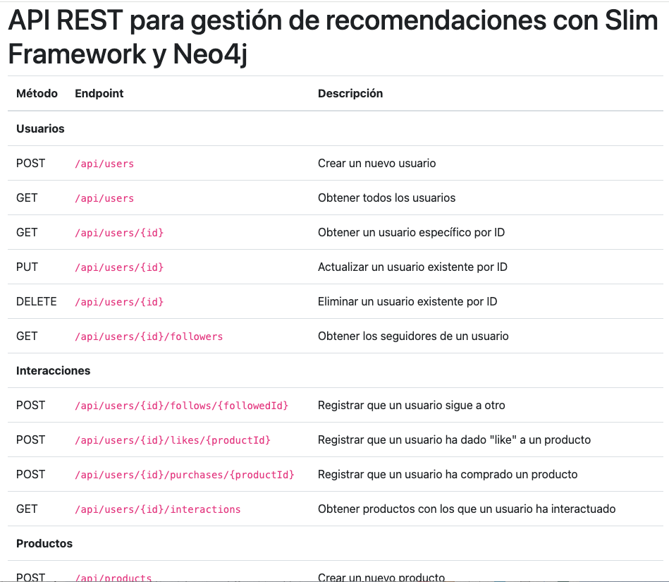
Endpoint de prueba#
Añade el siguiente código para definir un endpoint de prueba GET /api/test que devuelve un mensaje de prueba:
$app->get($prefix . '/test', function (RequestInterface $request, ResponseInterface $response) {
$data = [
'status' => 200,
'message' => 'API is working'
];
return createJsonResponse($response, $data);
});
Endpoints de usuarios#
En esta sección vamos a implementar los endpoints para gestionar usuarios en la API REST. Los endpoints incluyen la creación, consulta, actualización y eliminación de usuarios, así como el seguimiento de otros usuarios.
En el archivo public/routes/users.php, añade el siguiente código antes de la definición de las rutas de usuarios:
<?php
use Psr\Http\Message\RequestInterface;
use Psr\Http\Message\ResponseInterface;
use Laudis\Neo4j\Databags\Statement;
// Los endpoints de usuarios se definen aquí
Endpoint para crear un usuario#
Añade el siguiente código para definir un endpoint POST /api/users que permite crear un nuevo usuario. Este endpoint recibe los datos del usuario en formato JSON en el cuerpo de la solicitud y los inserta en la base de datos de Neo4j. En el cuerpo de la solicitud se deben proporcionar los siguientes campos: name y email. El endpoint devuelve un mensaje con el ID del nuevo usuario creado. La operación Neo4j que se usaría para insertar un nodo de usuario sería similar a la siguiente:
CREATE (u:User {name: 'Alice Smith', email: 'alicesmith@acme.com'})
// Endpoint para crear un nuevo usuario
$app->post($prefix . '/users', function (RequestInterface $request, ResponseInterface $response) use ($client) {
$data = $request->getParsedBody() ?? [];
// Validar los datos de entrada
if (!array_key_exists('name', $data) || !array_key_exists('email', $data)) {
return createJsonResponse($response->withStatus(400), [
'status' => 400,
'message' => 'Invalid input'
]);
}
// Crear un nuevo nodo de usuario en la base de datos
$statement = new Statement('CREATE (u:User {name: $name, email: $email}) RETURN u', $data);
$result = $client->runStatement($statement);
// Obtener el ID del nuevo usuario
$result = $result->first()->get('u')->getId();
// Devolver la respuesta con el ID del nuevo usuario
return createJsonResponse($response->withStatus(201), [
'status' => 201,
'message' => 'User created',
'userId' => $result
]);
});
Endpoint para obtener todos los usuarios#
Añade el siguiente código para definir un endpoint GET /api/users que permite obtener todos los usuarios de la base de datos. Este endpoint devuelve un array con todos los usuarios y sus propiedades. La operación Neo4j que se usaría para obtener todos los nodos de usuario sería similar a la siguiente:
MATCH (u:User) RETURN u
$app->get($prefix . '/users', function (RequestInterface $request, ResponseInterface $response) use ($client) {
// Obtener todos los nodos de usuarios de la base de datos
$statement = new Statement('MATCH (u:User) RETURN u', []);
$result = $client->runStatement($statement);
// Preparar la lista de usuarios
$users = [];
foreach ($result as $user) {
$node = $user->get('u');
$users[] = [
'id' => $node->getId(),
'name' => $node->getProperty('name'),
'email' => $node->getProperty('email')
];
}
// Devolver la respuesta con la lista de usuarios
return createJsonResponse($response, [
'status' => 200,
'users' => $users
]);
});
Endpoint para obtener un usuario específico#
Añade el siguiente código para definir un endpoint GET /api/users/{id} que permite obtener un usuario específico por ID. Este endpoint recibe el ID del usuario en la URL y devuelve los datos del usuario. La operación Neo4j que se usaría para obtener un nodo de usuario específico sería similar a la siguiente:
MATCH (u:User) WHERE id(u) = 1 RETURN u
// Endpoint para obtener un usuario específico
$app->get($prefix . '/users/{id}', function (RequestInterface $request, ResponseInterface $response, array $args) use ($client) {
$id = $args['id'];
// Obtener el nodo de usuario de la base de datos
$statement = new Statement('MATCH (u:User) WHERE id(u) = $id RETURN u', ['id' => (int)$id]);
$result = $client->runStatement($statement);
// Verificar si el usuario existe
if ($result->count() === 0) {
return createJsonResponse($response->withStatus(404), [
'status' => 404,
'message' => 'User not found'
]);
}
// Obtener los datos del usuario
$node = $result->first()->get('u');
$user = [
'id' => $node->getId(),
'name' => $node->getProperty('name'),
'email' => $node->getProperty('email')
];
// Devolver la respuesta con los datos del usuario
return createJsonResponse($response, [
'status' => 200,
'user' => $user
]);
});
Endpoint para actualizar un usuario existente#
Añade el siguiente código para definir un endpoint PUT /api/users/{id} que permite actualizar un usuario existente por ID. Este endpoint recibe el ID del usuario en la URL y los datos del usuario en formato JSON en el cuerpo de la solicitud. Los datos del usuario deben incluir los campos name y email. La operación Neo4j que se usaría para actualizar un nodo de usuario sería similar a la siguiente:
MATCH (u:User) WHERE id(u) = 1 SET u.name = 'Alice Smith', u.email = 'newemailofallice@acme.com' RETURN u
// Endpoint para actualizar un usuario existente
$app->put($prefix . '/users/{id}', function (RequestInterface $request, ResponseInterface $response, array $args) use ($client) {
$id = $args['id'];
$data = $request->getParsedBody() ?? [];
// Validar los datos de entrada
if (!array_key_exists('name', $data) || !array_key_exists('email', $data)) {
return createJsonResponse($response->withStatus(400), [
'status' => 400,
'message' => 'Invalid input'
]);
}
$name = $data['name'];
$email = $data['email'];
// Actualizar el nodo de usuario en la base de datos
$statement = new Statement('MATCH (u:User) WHERE id(u) = $id SET u.name = $name, u.email = $email RETURN u', array_merge($data, ['id' => (int)$id]));
$result = $client->runStatement($statement);
// Verificar si el usuario existe
if ($result->count() === 0) {
return createJsonResponse($response->withStatus(404), [
'status' => 404,
'message' => 'User not found'
]);
}
// Devolver la respuesta
return createJsonResponse($response, [
'status' => 200,
'message' => 'User updated'
]);
});
Endpoint para eliminar un usuario existente#
Añade el siguiente código para definir un endpoint DELETE /api/users/{id} que permite eliminar un usuario existente por ID. Este endpoint recibe el ID del usuario en la URL y elimina el nodo de usuario de la base de datos. La operación Neo4j que se usaría para eliminar un nodo de usuario sería similar a la siguiente:
MATCH (u:User) WHERE id(u) = 1 DELETE u
// Endpoint para eliminar un usuario existente
$app->delete($prefix . '/users/{id}', function (RequestInterface $request, ResponseInterface $response, array $args) use ($client) {
$id = $args['id'];
// Eliminar el nodo de usuario de la base de datos
$statement = new Statement('MATCH (u:User) WHERE id(u) = $id DELETE u', ['id' => (int)$id]);
$result = $client->runStatement($statement);
// Devolver la respuesta
return createJsonResponse($response, [
'status' => 200,
'message' => 'User deleted'
]);
});
Endpoint para registrar que un usuario sigue a otro#
Añade el siguiente código para definir un endpoint POST /api/users/{id}/follows/{followedId} que permite registrar que un usuario sigue a otro. Este endpoint recibe los IDs de los usuarios en la URL y crea una relación de tipo FOLLOWS entre los dos usuarios en la base de datos. La operación Neo4j que se usaría para crear una relación de seguimiento entre dos nodos de usuario sería similar a la siguiente:
MATCH (u1:User), (u2:User) WHERE id(u1) = 1 AND id(u2) = 2 CREATE (u1)-[:FOLLOWS]->(u2)
// Endpoint para registrar que un usuario sigue a otro
$app->post($prefix . '/users/{id}/follows/{followedId}', function (RequestInterface $request, ResponseInterface $response, array $args) use ($client) {
$id = $args['id'];
$followedId = $args['followedId'];
// Verificar si el usuario a seguir existe
$statement = new Statement('MATCH (u:User) WHERE id(u) = $followedId RETURN u', ['followedId' => (int)$followedId]);
$result = $client->runStatement($statement);
if ($result->count() === 0) {
return createJsonResponse($response->withStatus(404), [
'status' => 404,
'message' => 'User to follow not found'
]);
}
// Crear una relación de FOLLOWS entre los dos usuarios
$statement = new Statement(
'MATCH (u1:User), (u2:User) WHERE id(u1) = $id AND id(u2) = $followedId
CREATE (u1)-[r:FOLLOWS]->(u2)
RETURN r',
[
'id' => (int)$id,
'followedId' => (int)$followedId
]
);
$result = $client->runStatement($statement);
// Verificar si la relación se creó correctamente
if ($result->count() === 0) {
return createJsonResponse($response->withStatus(500), [
'status' => 500,
'message' => 'Failed to create relationship'
]);
}
// Devolver la respuesta
return createJsonResponse($response->withStatus(201), [
'status' => 201,
'message' => 'User followed'
]);
});
Endpoint de productos#
En esta sección vamos a implementar los endpoints para gestionar productos en la API REST. Los endpoints incluyen la creación, consulta y actualización de productos.
En el archivo public/routes/products.php, añade el siguiente código antes de la definición de las rutas de productos:
<?php
use Psr\Http\Message\RequestInterface;
use Psr\Http\Message\ResponseInterface;
use Laudis\Neo4j\Databags\Statement;
// Los endpoints de productos se definen aquí
Endpoint para crear un producto#
Añade el siguiente código para definir un endpoint POST /api/products que permite crear un nuevo producto. Este endpoint recibe los datos del producto en formato JSON en el cuerpo de la solicitud y los inserta en la base de datos de Neo4j. En el cuerpo de la solicitud se deben proporcionar los siguientes campos: name, description, price y categoryId. El endpoint devuelve un mensaje con el ID del nuevo producto creado. La operación Neo4j que se usaría para insertar un nodo de producto sería similar a la siguiente:
Note
En este tutorial se asume que los productos tienen una categoría asociada. La categoría se representa mediante un ID que se almacena en la propiedad categoryId del nodo de producto. En una aplicación real, la categoría podría ser un nodo separado con sus propias propiedades y relaciones. De una forma o de otra, en este tutorial no se profundizará en la gestión de categorías de productos.
CREATE (p:Product {name: 'Smartphone XYZ', description: 'Smartphone de última generación con pantalla AMOLED', price: 699.99, categoryId: 1})
// Endpoint para crear un nuevo producto
$app->post($prefix . '/products', function (RequestInterface $request, ResponseInterface $response) use ($client) {
$data = $request->getParsedBody() ?? [];
// Validar los datos de entrada
if (!array_key_exists('name', $data) || !array_key_exists('description', $data) || !array_key_exists('price', $data) || !array_key_exists('categoryId', $data)) {
return createJsonResponse($response->withStatus(400), [
'status' => 400,
'message' => 'Invalid input'
]);
}
$name = $data['name'];
$description = $data['description'];
$price = $data['price'];
$categoryId = $data['categoryId'];
// Crear un nuevo nodo de producto en la base de datos
$statement = new Statement('CREATE (p:Product {name: $name, description: $description, price: $price, categoryId: $categoryId}) RETURN p', $data);
$result = $client->runStatement($statement);
// Obtener el ID del nuevo producto
$result = $result->first()->get('p')->getId();
// Devolver la respuesta con el ID del nuevo producto
return createJsonResponse($response->withStatus(201), [
'status' => 201,
'message' => 'Product created',
'productId' => $result
]);
});
Endpoint para obtener todos los productos#
Añade el siguiente código para definir un endpoint GET /api/products que permite obtener todos los productos de la base de datos. Este endpoint devuelve un array con todos los productos y sus propiedades. La operación Neo4j que se usaría para obtener todos los nodos de producto sería similar a la siguiente:
MATCH (p:Product) RETURN p
// Endpoint para obtener todos los productos
$app->get($prefix . '/products', function (RequestInterface $request, ResponseInterface $response) use ($client) {
// Obtener todos los nodos de productos de la base de datos
$statement = new Statement('MATCH (p:Product) RETURN p', []);
$result = $client->runStatement($statement);
// Preparar la lista de productos
$products = [];
foreach ($result as $product) {
$node = $product->get('p');
$products[] = [
'id' => $node->getId(),
'name' => $node->getProperty('name'),
'description' => $node->getProperty('description'),
'price' => $node->getProperty('price'),
'categoryId' => $node->getProperty('categoryId')
];
}
// Devolver la respuesta con la lista de productos
return createJsonResponse($response, [
'status' => 200,
'products' => $products
]);
});
Endpoint para obtener un producto por ID#
Añade el siguiente código para definir un endpoint GET /api/products/{id} que permite obtener un producto específico por ID. Este endpoint recibe el ID del producto en la URL y devuelve los datos del producto. La operación Neo4j que se usaría para obtener un nodo de producto específico sería similar a la siguiente:
MATCH (p:Product) WHERE id(p) = 1 RETURN p
// Endpoint para obtener un producto por ID
$app->get($prefix . '/products/{id}', function (RequestInterface $request, ResponseInterface $response, array $args) use ($client) {
$id = $args['id'];
// Obtener el nodo de producto de la base de datos
$statement = new Statement('MATCH (p:Product) WHERE id(p) = $id RETURN p', ['id' => (int) $id]);
$result = $client->runStatement($statement);
// Verificar si el producto existe
if ($result->count() === 0) {
return createJsonResponse($response->withStatus(404), [
'status' => 404,
'message' => 'Product not found'
]);
}
// Obtener los datos del producto
$node = $result->first()->get('p');
$product = [
'id' => $node->getId(),
'name' => $node->getProperty('name'),
'description' => $node->getProperty('description'),
'price' => $node->getProperty('price'),
'categoryId' => $node->getProperty('categoryId')
];
// Devolver la respuesta con los datos del producto
return createJsonResponse($response, [
'status' => 200,
'product' => $product
]);
});
Endpoint para actualizar un producto por ID#
Añade el siguiente código para definir un endpoint PUT /api/products/{id} que permite actualizar un producto existente por ID. Este endpoint recibe el ID del producto en la URL y los datos del producto en formato JSON en el cuerpo de la solicitud. Los datos del producto deben incluir los campos name, description, price y categoryId. La operación Neo4j que se usaría para actualizar un nodo de producto sería similar a la siguiente:
MATCH (p:Product) WHERE id(p) = 1 SET p.name = 'Smartphone XYZ', p.description = 'Smartphone de última generación con pantalla AMOLED', p.price = 799.99, p.categoryId = 2 RETURN p
// Endpoint para actualizar un producto por ID
$app->put($prefix . '/products/{id}', function (RequestInterface $request, ResponseInterface $response, array $args) use ($client) {
$id = $args['id'];
$data = $request->getParsedBody() ?? [];
// Validar los datos de entrada
if (!array_key_exists('name', $data) || !array_key_exists('description', $data) || !array_key_exists('price', $data) || !array_key_exists('categoryId', $data)) {
return createJsonResponse($response->withStatus(400), [
'status' => 400,
'message' => 'Invalid input'
]);
}
$data['id'] = (int) $id;
$name = $data['name'];
$description = $data['description'];
$price = $data['price'];
$categoryId = $data['categoryId'];
// Actualizar el nodo de producto en la base de datos
$statement = new Statement('MATCH (p:Product) WHERE id(p) = $id SET p.name = $name, p.description = $description, p.price = $price, p.categoryId = $categoryId RETURN p', $data);
$result = $client->runStatement($statement);
// Verificar si el producto existe
if ($result->count() === 0) {
return createJsonResponse($response->withStatus(404), [
'status' => 404,
'message' => 'Product not found'
]);
}
// Devolver la respuesta con el mensaje de éxito
return createJsonResponse($response, [
'status' => 200,
'message' => 'Product updated'
]);
});
Endpoints de interacciones#
En esta sección vamos a implementar los endpoints para gestionar interacciones entre usuarios y productos en la API REST. Las interacciones incluyen dar “me gusta” a un producto, comprar un producto y obtener productos con los que un usuario ha interactuado.
En el archivo public/routes/interactions.php, añade el siguiente código antes de la definición de las rutas de interacciones:
<?php
use Psr\Http\Message\RequestInterface;
use Psr\Http\Message\ResponseInterface;
use Laudis\Neo4j\Databags\Statement;
Endpoint para registrar que un usuario ha dado “like” a un producto#
Añade el siguiente código para definir un endpoint POST /api/users/{id}/likes/{productId} que permite registrar que un usuario ha dado “like” a un producto. Este endpoint recibe los IDs del usuario y del producto en la URL y crea una relación de tipo LIKES entre el usuario y el producto en la base de datos. La operación Neo4j que se usaría para crear una relación de “like” entre un usuario y un producto sería similar a la siguiente:
MATCH (u:User), (p:Product) WHERE id(u) = 1 AND id(p) = 1 CREATE (u)-[:LIKES]->(p)
// Endpoint para registrar que un usuario ha dado "like" a un producto
$app->post($prefix . '/users/{id}/likes/{productId}', function (RequestInterface $request, ResponseInterface $response, array $args) use ($client) {
$userId = $args['id'];
$productId = $args['productId'];
// Verificar si el usuario existe
$statement = new Statement('MATCH (u:User) WHERE id(u) = $userId RETURN u', ['userId' => (int)$userId]);
$result = $client->runStatement($statement);
if ($result->count() === 0) {
return createJsonResponse($response->withStatus(404), [
'status' => 404,
'message' => 'User not found'
]);
}
// Verificar si el producto existe
$statement = new Statement('MATCH (p:Product) WHERE id(p) = $productId RETURN p', ['productId' => (int)$productId]);
$result = $client->runStatement($statement);
if ($result->count() === 0) {
return createJsonResponse($response->withStatus(404), [
'status' => 404,
'message' => 'Product not found'
]);
}
// Crear una relación de LIKES entre el usuario y el producto
$statement = new Statement(
'MATCH (u:User), (p:Product) WHERE id(u) = $userId AND id(p) = $productId
CREATE (u)-[r:LIKES]->(p)
RETURN r',
[
'userId' => (int)$userId,
'productId' => (int)$productId
]
);
$result = $client->runStatement($statement);
// Verificar si la relación se creó correctamente
if ($result->count() === 0) {
return createJsonResponse($response->withStatus(500), [
'status' => 500,
'message' => 'Failed to create relationship'
]);
}
// Devolver la respuesta
return createJsonResponse($response->withStatus(201), [
'status' => 201,
'message' => 'Product liked'
]);
});
Endpoint para registrar que un usuario ha comprado un producto#
Añade el siguiente código para definir un endpoint POST /api/users/{id}/purchases/{productId} que permite registrar que un usuario ha comprado un producto. Este endpoint recibe los IDs del usuario y del producto en la URL y crea una relación de tipo PURCHASED entre el usuario y el producto en la base de datos. La operación Neo4j que se usaría para crear una relación de compra entre un usuario y un producto sería similar a la siguiente:
MATCH (u:User), (p:Product) WHERE id(u) = 1 AND id(p) = 1 CREATE (u)-[:PURCHASED]->(p)
// Endpoint para registrar que un usuario ha comprado un producto
$app->post($prefix . '/users/{id}/purchases/{productId}', function (RequestInterface $request, ResponseInterface $response, array $args) use ($client) {
$userId = $args['id'];
$productId = $args['productId'];
// Verificar si el usuario existe
$statement = new Statement('MATCH (u:User) WHERE id(u) = $userId RETURN u', ['userId' => (int)$userId]);
$result = $client->runStatement($statement);
if ($result->count() === 0) {
return createJsonResponse($response->withStatus(404), [
'status' => 404,
'message' => 'User not found'
]);
}
// Verificar si el producto existe
$statement = new Statement('MATCH (p:Product) WHERE id(p) = $productId RETURN p', ['productId' => (int)$productId]);
$result = $client->runStatement($statement);
if ($result->count() === 0) {
return createJsonResponse($response->withStatus(404), [
'status' => 404,
'message' => 'Product not found'
]);
}
// Crear una relación de PURCHASED entre el usuario y el producto
$statement = new Statement(
'MATCH (u:User), (p:Product) WHERE id(u) = $userId AND id(p) = $productId
CREATE (u)-[r:PURCHASED]->(p)
RETURN r',
[
'userId' => (int)$userId,
'productId' => (int)$productId
]
);
$result = $client->runStatement($statement);
// Verificar si la relación se creó correctamente
if ($result->count() === 0) {
return createJsonResponse($response->withStatus(500), [
'status' => 500,
'message' => 'Failed to create relationship'
]);
}
// Devolver la respuesta
return createJsonResponse($response->withStatus(201), [
'status' => 201,
'message' => 'Product purchased'
]);
});
Endpoint para obtener productos con los que un usuario ha interactuado#
Añade el siguiente código para definir un endpoint GET /api/users/{id}/interactions que permite obtener productos con los que un usuario ha interactuado. Este endpoint recibe el ID del usuario en la URL y devuelve una lista de productos con los que el usuario ha interactuado, incluyendo los productos que ha comprado y los que ha dado “like”. La operación Neo4j que se usaría para obtener productos con los que un usuario ha interactuado sería similar a la siguiente:
MATCH (u:User)-[r]->(p:Product) WHERE id(u) = 1 RETURN p, type(r) as interactionType
// Endpoint para obtener productos con los que un usuario ha interactuado
$app->get($prefix . '/users/{id}/interactions', function (RequestInterface $request, ResponseInterface $response, array $args) use ($client) {
$userId = $args['id'];
// Verificar si el usuario existe
$statement = new Statement('MATCH (u:User) WHERE id(u) = $userId RETURN u', ['userId' => (int)$userId]);
$result = $client->runStatement($statement);
if ($result->count() === 0) {
return createJsonResponse($response->withStatus(404), [
'status' => 404,
'message' => 'User not found'
]);
}
// Obtener productos con los que el usuario ha interactuado
$statement = new Statement(
'MATCH (u:User)-[r]->(p:Product) WHERE id(u) = $userId
RETURN p, type(r) as interactionType',
['userId' => (int)$userId]
);
$result = $client->runStatement($statement);
// Preparar la lista de interacciones
$interactions = [];
foreach ($result as $record) {
$node = $record->get('p');
$interactions[] = [
'productId' => $node->getId(),
'name' => $node->getProperty('name'),
'description' => $node->getProperty('description'),
'price' => $node->getProperty('price'),
'categoryId' => $node->getProperty('categoryId'),
'interactionType' => $record->get('interactionType')
];
}
// Devolver la respuesta con la lista de interacciones
return createJsonResponse($response, [
'status' => 200,
'interactions' => $interactions
]);
});
Endpoints de recomendaciones#
En esta sección vamos a implementar los endpoints para obtener recomendaciones de productos en la API REST. Las recomendaciones se basarán en las interacciones de los usuarios con los productos, como las compras y los “likes”. Las recomendaciones incluirán productos recomendados basados en compras y “likes” de usuarios con intereses similares, productos recomendados basados en compras y “likes” de amigos del usuario, y productos relacionados basados en patrones de compra y “likes”.
En el archivo public/routes/recommendations.php, añade el siguiente código antes de la definición de las rutas de recomendaciones:
<?php
use Psr\Http\Message\RequestInterface;
use Psr\Http\Message\ResponseInterface;
use Laudis\Neo4j\Databags\Statement;
Endpoint para obtener recomendaciones de productos basadas en compras y “likes” de usuarios con intereses similares#
Añade el siguiente código para definir un endpoint GET /api/users/{id}/recommendations que permite obtener recomendaciones de productos basadas en compras y “likes” de usuarios con intereses similares. Este endpoint recibe el ID del usuario en la URL y devuelve una lista de productos recomendados que el usuario aún no ha comprado ni dado “like”. La operación Neo4j que se usaría para obtener recomendaciones de productos basadas en compras y “likes” de usuarios con intereses similares sería similar a la siguiente:
MATCH (u:User)-[:LIKES|PURCHASED]->(p:Product)<-[:LIKES|PURCHASED]-(other:User)-[:LIKES|PURCHASED]->(rec:Product)
WHERE id(u) = 1 AND NOT (u)-[:LIKES|PURCHASED]->(rec)
RETURN DISTINCT rec
// Endpoint para obtener recomendaciones de productos basadas en compras y "likes" de usuarios con intereses similares
$app->get($prefix . '/users/{id}/recommendations', function (RequestInterface $request, ResponseInterface $response, array $args) use ($client) {
$userId = $args['id'];
// Verificar si el usuario existe
$statement = new Statement('MATCH (u:User) WHERE id(u) = $userId RETURN u', ['userId' => (int)$userId]);
$result = $client->runStatement($statement);
if ($result->count() === 0) {
return createJsonResponse($response->withStatus(404), [
'status' => 404,
'message' => 'User not found'
]);
}
// Obtener recomendaciones de productos basadas en compras y "likes" de usuarios con intereses similares
$statement = new Statement(
'MATCH (u:User)-[:LIKES|PURCHASED]->(p:Product)<-[:LIKES|PURCHASED]-(other:User)-[:LIKES|PURCHASED]->(rec:Product)
WHERE id(u) = $userId AND NOT (u)-[:LIKES|PURCHASED]->(rec)
RETURN DISTINCT rec',
['userId' => (int)$userId]
);
$result = $client->runStatement($statement);
// Preparar la lista de recomendaciones
$recommendations = [];
foreach ($result as $record) {
$node = $record->get('rec');
$recommendations[] = [
'productId' => $node->getId(),
'name' => $node->getProperty('name'),
'description' => $node->getProperty('description'),
'price' => $node->getProperty('price'),
'categoryId' => $node->getProperty('categoryId')
];
}
// Devolver la respuesta con la lista de recomendaciones
return createJsonResponse($response, [
'status' => 200,
'recommendations' => $recommendations
]);
});
Endpoint para obtener productos recomendados en función de lo que han comprado/valorado amigos del usuario#
Añade el siguiente código para definir un endpoint GET /api/users/{id}/friends-recommendations que permite obtener productos recomendados en función de lo que han comprado/valorado amigos del usuario. Este endpoint recibe el ID del usuario en la URL y devuelve una lista de productos recomendados que el usuario aún no ha comprado ni dado “like”, basados en las interacciones de sus amigos. La operación Neo4j que se usaría para obtener productos recomendados en función de lo que han comprado/valorado amigos del usuario sería similar a la siguiente:
MATCH (u:User)-[:FOLLOWS]->(friend:User)-[:LIKES|PURCHASED]->(rec:Product)
WHERE id(u) = 1 AND NOT (u)-[:LIKES|PURCHASED]->(rec)
RETURN DISTINCT rec
// Endpoint para obtener productos recomendados en función de lo que han comprado/valorado amigos del usuario
$app->get($prefix . '/users/{id}/friends-recommendations', function (RequestInterface $request, ResponseInterface $response, array $args) use ($client) {
$userId = $args['id'];
// Verificar si el usuario existe
$statement = new Statement('MATCH (u:User) WHERE id(u) = $userId RETURN u', ['userId' => (int)$userId]);
$result = $client->runStatement($statement);
if ($result->count() === 0) {
return createJsonResponse($response->withStatus(404), [
'status' => 404,
'message' => 'User not found'
]);
}
// Obtener recomendaciones de productos basadas en compras y "likes" de amigos del usuario
$statement = new Statement(
'MATCH (u:User)-[:FOLLOWS]->(friend:User)-[:LIKES|PURCHASED]->(rec:Product)
WHERE id(u) = $userId AND NOT (u)-[:LIKES|PURCHASED]->(rec)
RETURN DISTINCT rec',
['userId' => (int)$userId]
);
$result = $client->runStatement($statement);
// Preparar la lista de recomendaciones
$recommendations = [];
foreach ($result as $record) {
$node = $record->get('rec');
$recommendations[] = [
'productId' => $node->getId(),
'name' => $node->getProperty('name'),
'description' => $node->getProperty('description'),
'price' => $node->getProperty('price'),
'categoryId' => $node->getProperty('categoryId')
];
}
// Devolver la respuesta con la lista de recomendaciones
return createJsonResponse($response, [
'status' => 200,
'recommendations' => $recommendations
]);
});
Endpoint para obtener productos relacionados basados en patrones de compra y likes#
Añade el siguiente código para definir un endpoint GET /api/products/{id}/related que permite obtener productos relacionados basados en patrones de compra y likes. Este endpoint recibe el ID del producto en la URL y devuelve una lista de productos relacionados que los usuarios que han comprado o dado “like” al producto también han comprado o dado “like”. La operación Neo4j que se usaría para obtener productos relacionados basados en patrones de compra y likes sería similar a la siguiente:
MATCH (p:Product)<-[:LIKES|PURCHASED]-(u:User)-[:LIKES|PURCHASED]->(related:Product)
WHERE id(p) = 1 AND id(related) <> 1
RETURN DISTINCT related
// Endpoint para obtener productos relacionados basados en patrones de compra y likes
$app->get($prefix . '/products/{id}/related', function (RequestInterface $request, ResponseInterface $response, array $args) use ($client) {
$productId = $args['id'];
// Verificar si el producto existe
$statement = new Statement('MATCH (p:Product) WHERE id(p) = $productId RETURN p', ['productId' => (int)$productId]);
$result = $client->runStatement($statement);
if ($result->count() === 0) {
return createJsonResponse($response->withStatus(404), [
'status' => 404,
'message' => 'Product not found'
]);
}
// Obtener productos relacionados basados en patrones de compra y likes
$statement = new Statement(
'MATCH (p:Product)<-[:LIKES|PURCHASED]-(u:User)-[:LIKES|PURCHASED]->(related:Product)
WHERE id(p) = $productId AND id(related) <> $productId
RETURN DISTINCT related',
['productId' => (int)$productId]
);
$result = $client->runStatement($statement);
// Preparar la lista de productos relacionados
$relatedProducts = [];
foreach ($result as $record) {
$node = $record->get('related');
$relatedProducts[] = [
'productId' => $node->getId(),
'name' => $node->getProperty('name'),
'description' => $node->getProperty('description'),
'price' => $node->getProperty('price'),
'categoryId' => $node->getProperty('categoryId')
];
}
// Devolver la respuesta con la lista de productos relacionados
return createJsonResponse($response, [
'status' => 200,
'relatedProducts' => $relatedProducts
]);
});
Indices para mejorar el rendimiento#
Los índices son una parte importante de cualquier base de datos, incluida Neo4j. Los índices permiten acelerar las consultas y búsquedas en la base de datos, especialmente cuando se trabaja con grandes volúmenes de datos. En Neo4j, los índices se utilizan para buscar nodos y relaciones de forma eficiente, lo que puede mejorar significativamente el rendimiento de las consultas.
En el contexto de la API, los índices pueden ayudar a acelarar las consultas que buscan usuarios, productos y relaciones entre ellos. Al definir índices por los campos más utilizados en las consultas, se pueden reducir los tiempos de respuesta y mejorar la experiencia del usuario.
En Neo4j, los índices se pueden definir en propiedades de nodos y relaciones. Los índices se pueden crear en propiedades específicas de los nodos y relaciones para acelerar las consultas que buscan nodos y relaciones basados en esas propiedades. Por ejemplo, si se busca con frecuencia un usuario por su dirección de correo electrónico, se puede crear un índice en la propiedad email del nodo de usuario para acelerar la búsqueda. En cuanto a las relaciones, se pueden crear índices en las propiedades de las relaciones para acelerar las consultas que buscan relaciones basadas en esas propiedades.
Neo4j soporta dos categorías de índices: índices de rendimiento de búsqueda e índices semánticos. Los índices de rendimiento de búsqueda se utilizan para acelerar las consultas basadas en coincidencias exactas, mientras que los índices semánticos se utilizan para búsquedas aproximadas y calcular similaridades entre la cadena de búsqueda y los valores de las propiedades. En esta última categoría, se incluyen los índices de texto completo y los índices de similitud de vectores.
Definir índices en Neo4j#
En Neo4j, los índices se definen utilizando la cláusula CREATE INDEX en una sentencia Cypher. Aquí veremos cómo definir índices de rango, índices de texto y $$$$.
Índices de rango#
Los índices de rango se utilizan para acelerar las consultas que buscan nodos o relaciones basados en valores numéricos o de cadena. Los índices de rango se pueden crear en propiedades de nodos y relaciones para acelerar las consultas que buscan nodos y relaciones basados en esos valores. Ejemplos de aplicación de índices de rango son la búsqueda de usuarios por su ID o la búsqueda de productos por su precio. La tabla siguiente muestra la operación permitida y sus sintaxis.
Operación |
Sintaxis |
Igualdad |
|
Búsqueda en rango |
|
Pertenencia a una lista |
|
Búsqueda con prefijo |
|
Crear un índice de rango en una propiedad de un nodo:
CREATE INDEX <index_name> FOR (n:Label) ON (n.property)
Crear un índice de rango en una propiedad de una relación:
CREATE INDEX <index_name> FOR ()-[r:RELATIONSHIP_TYPE]-() ON (r.property)
Índices de texto#
Los índices de texto sólo se pueden crear en propiedades de nodos y relaciones que contienen cadenas de texto. Se pueden usar con predicados que sólo operan con texto, como STARTS WITH, CONTAINS y ENDS WITH, aunque también se pueden usar con predicados de igualdad, siempre que el valor sea una cadena de texto. La tabla siguiente muestra la operación permitida y sus sintaxis.
Operación |
Sintaxis |
Igualdad |
|
Pertenece a una lista |
|
Búsqueda de prefijo |
|
Búsqueda de sufijo |
|
Búsqueda de subcadena |
|
Crear un índice de texto en una propiedad de un nodo:
CREATE TEXT INDEX <index_name> FOR (n:Label) ON (n.property)
Crear un índice de texto en una propiedad de una relación:
CREATE TEXT INDEX <index_name> FOR ()-[r:RELATIONSHIP_TYPE]-() ON (r.property)
Índices semánticos#
Los índices semánticos se utilizan para búsquedas aproximadas y cálculos de similitud entre la cadena de búsqueda y los valores de las propiedades. Los índices semánticos incluyen los índices de texto completo y los índices de similitud de vectores. Los índices de texto completo se utilizan para búsquedas de texto completo en propiedades de nodos y relaciones, mientras que los índices de similitud de vectores se utilizan para calcular la similitud entre vectores de características de nodos y relaciones como vectores en un espacio multidimensional.
Crear un índice de texto completo en una propiedad de un nodo:
CREATE FULLTEXT INDEX <index_name> FOR (n:Label) ON (n.property)
Crear un índice de texto completo en una propiedad de una relación:
CREATE FULLTEXT INDEX <index_name> FOR ()-[r:RELATIONSHIP_TYPE]-() ON (r.property)
Note
Como ejemplo de aplicación de un índice de texto completo en una relación supongamos que queremos buscar relaciones de tipo
LIKESyPURCHASEDbasadas en una propiedad de textocommentque contiene comentarios de los usuarios sobre los productos. Podríamos crear un índice de texto completo en la propiedadcommentde las relaciones de tipoLIKESyPURCHASEDpara acelerar las búsquedas de relaciones basadas en los comentarios de los usuarios.CREATE FULLTEXT INDEX likes_comments FOR ()-[r:LIKES]-() ON (r.comment) CREATE FULLTEXT INDEX purchased_comments FOR ()-[r:PURCHASED]-() ON (r.comment)
Los índices vectoriales permiten búsquedas de similaridad y consultas analíticas complejas representando nodos y relaciones como vectores en un espacio multidimensional. Los índices de similitud de vectores se utilizan para calcular la similitud entre vectores de características de nodos y relaciones. Los índices de similitud de vectores se pueden utilizar para realizar búsquedas basadas en la similitud de vectores de características de nodos y relaciones. Por ejemplo, se pueden utilizar para encontrar nodos o relaciones similares a un nodo o relación dado en función de sus características. Para más información sobre los índices de similitud de vectores, consulta la documentación oficial de Neo4j, window=”_blank”.
Índices recomendados para la API#
Aunque los endpoints que hemos creado en esta API son sencillos y no requieren un gran rendimiento, es importante tener en cuenta que a medida que la base de datos crece y se añaden más usuarios, productos e interacciones, el rendimiento de las consultas puede verse afectado. Además, sólo se han creado un conjunto reducido de endpoints para demostrar cómo se pueden implementar las operaciones CRUD básicas en Neo4j. En una aplicación real, es probable que se necesiten más endpoints y operaciones más complejas, lo que puede afectar al rendimiento de la API. Por tanto, es recomendable definir índices en Neo4j para mejorar el rendimiento de las consultas y acelerar las operaciones de búsqueda. A continuación, se presentan algunos índices recomendados para la API basados en los campos más utilizados en las consultas.
Índices para la colección de usuarios#
Índice en el campo
emailpara buscar usuarios por email:CREATE INDEX user_email_index FOR (u:User) ON (u.email)
Índice en el campo
namepara buscar usuarios por nombre:CREATE INDEX user_name_index FOR (u:User) ON (u.name)
Índices para la colección de productos#
Índice en el campo
categoryIdpara filtrar productos por categoría:CREATE INDEX product_category_index FOR (p:Product) ON (p.categoryId)
Índice en el campo
namepara buscar productos por nombre:CREATE INDEX product_name_index FOR (p:Product) ON (p.name)
Índices para la colección de interacciones#
Índice en el campo
userIdpara filtrar interacciones por usuario:CREATE INDEX likes_user_index FOR ()-[r:LIKES]-() ON (r.userId) CREATE INDEX purchased_user_index FOR ()-[r:PURCHASED]-() ON (r.userId)
Índice en el campo
productIdpara filtrar interacciones por producto:CREATE INDEX likes_product_index FOR ()-[r:LIKES]-() ON (r.productId) CREATE INDEX purchased_product_index FOR ()-[r:PURCHASED]-() ON (r.productId)
Índice en el campo
commentpara buscar interacciones por comentarios (índice de texto completo):CREATE FULLTEXT INDEX likes_comments FOR ()-[r:LIKES]-() ON (r.comment) CREATE FULLTEXT INDEX purchased_comments FOR ()-[r:PURCHASED]-() ON (r.comment)
Estos índices pueden ayudar a mejorar el rendimiento de las consultas en la API y acelerar las operaciones de búsqueda. Es importante tener en cuenta que la creación de índices puede tener un impacto en el rendimiento de la base de datos, ya que los índices ocupan espacio en disco y requieren recursos para mantenerse actualizados. Por tanto, es recomendable evaluar el rendimiento de la base de datos y ajustar los índices según sea necesario para optimizar el rendimiento de la API.
Pruebas de la API#
Una vez que hemos desarrollado la API REST con Slim Framework, podemos probar los endpoints utilizando Postman. A continuación se muestran algunos ejemplos de peticiones a la API REST:
Crear un nuevo producto:
Método:
POSTURL:
http://localhost:8080/api/productsCuerpo:
{ "name": "Board game XYZ", "description": "Exciting board game for the whole family", "price": 29.99, "categoryId": "67c200a4953f04997706efbc" }
Respuesta esperada:
{ "status": 201, "message": "Product created", "productId": 15 }
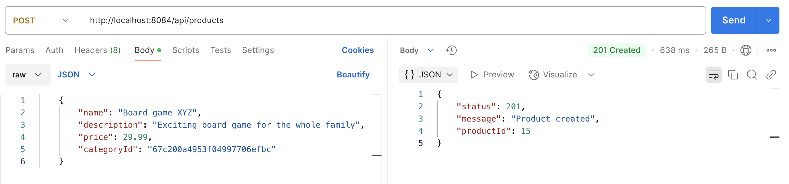
Obtener todos los productos:
Método:
GETURL:
http://localhost:8080/api/productsRespuesta esperada:
{ "status": 200, "products": [ { "id": 15, "name": "Board game XYZ", "description": "Exciting board game for the whole family", "price": 29.99, "categoryId": "67c200a4953f04997706efbc" } ... ] }
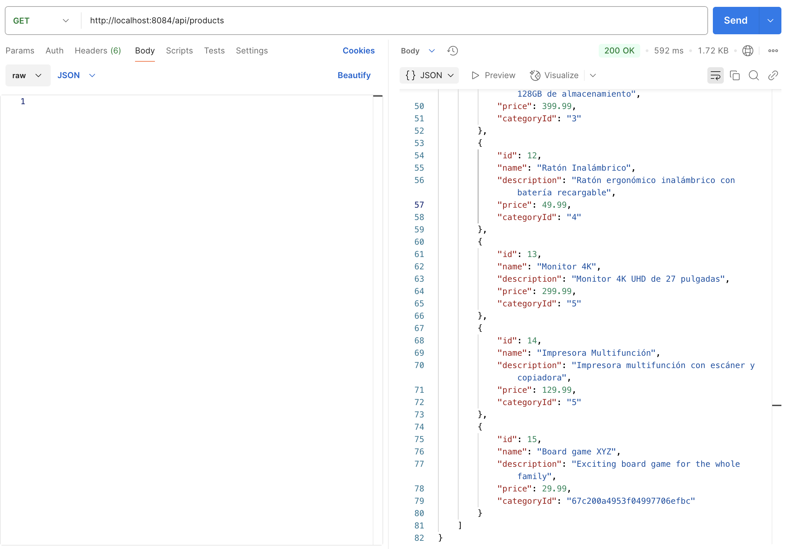
Obtener un usuario por ID:
Método:
GETURL:
http://localhost:8080/api/users/2Respuesta esperada:
{ "status": 200, "user": { "id": 2, "name": "Alice Smith", "email": "alicesmith@acme.com" } }
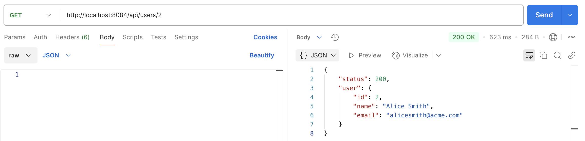
Indicar que a un usuario le gusta un producto:
Método:
POSTURL:
http://localhost:8080/api/users/2/likes/15Respuesta esperada:
{ "status": 201, "message": "Product liked" }
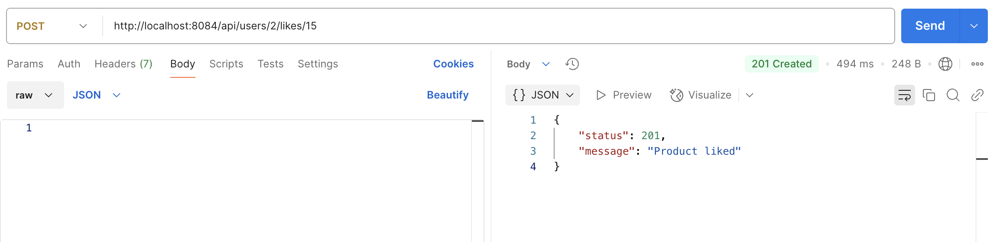
Como al usuario con ID 2 (
Alice Smith) ya le gustaban otros cuatro productos, tras indicar que le gusta el producto con ID 15 (Board game XYZ), ahora le gustan cinco productos en total. Veámoslo a continuación.
Obtener las interacciones del usuario con la API REST:
Método:
GETURL:
http://localhost:8080/api/users/2/interactionsRespuesta esperada:
{ "status": 200, "interactions": [ ... { "productId": 15, "name": "Board game XYZ", "description": "Exciting board game for the whole family", "price": 29.99, "categoryId": "67c200a4953f04997706efbc", "interactionType": "LIKES" } ] }
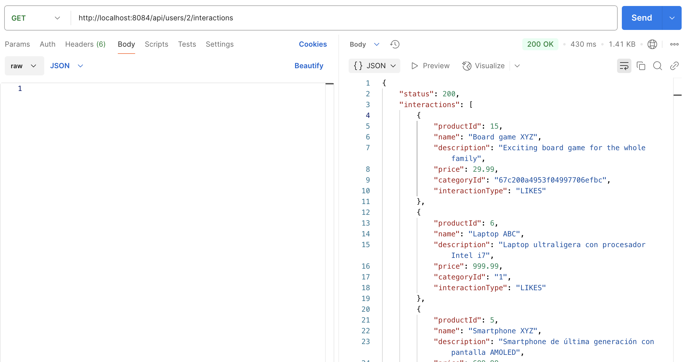
Si ahora lo vemos en la vista de grafo de Neo4j veremos todos los “likes” de Alice Smith, incluyendo el último que acabamos de añadir. La figura siguiente muestra el grafo de la base de datos después de añadir el “like” al producto con ID 15 (
Board game XYZ).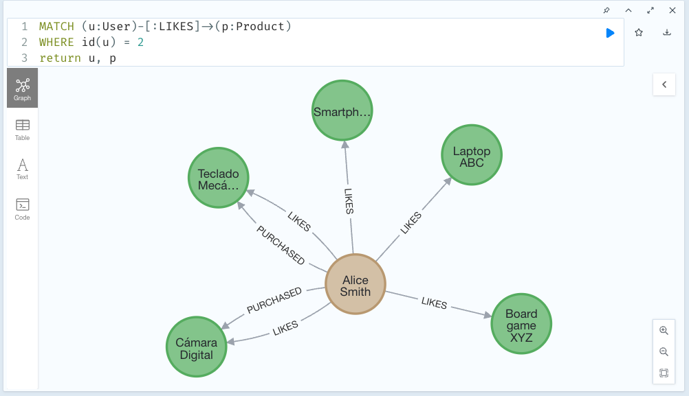
Tras esto, estaría bien conocer cómo afecta el “like” de Alice Smith a los usuarios que tienen intereses similares. Para ello, podemos obtener recomendaciones de productos basadas en compras y “likes” de usuarios con intereses similares. Veamos cómo hacerlo.
Obtener los seguidores de
Alice Smith:Método:
GETURL:
http://localhost:8080/api/users/2/followersRespuesta esperada:
{ "status": 200, "followers": [ { "id": 0, "name": "John Doe", "email": "johndoe@acme.com" } ] }
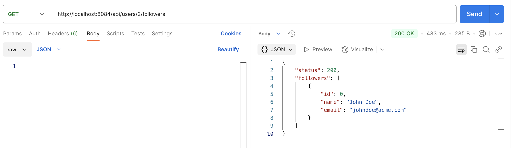
En este caso,
Alice Smithtiene un seguidor,John Doe. Lo podemos ver también en la vista de grafo de Neo4j. La figura siguiente muestra el grafo de seguidores después de añadir aJohn Doecomo seguidor deAlice Smith.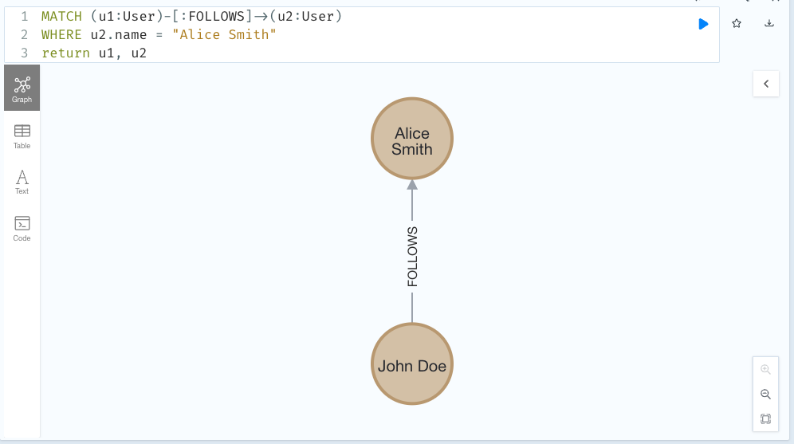
Ahora que sabemos que
John Doees seguidor deAlice Smith, podemos obtener recomendaciones de productos basadas en compras y “likes” de amigos del usuario. Veamos cómo hacerlo.
Obtener recomendaciones de productos basadas en compras y “likes” de amigos del usuario:
Método:
GETURL:
http://localhost:8080/api/users/0/friends-recommendationsRespuesta esperada:
{ "status": 200, "recommendations": [ { "productId": 15, "name": "Board game XYZ", "description": "Exciting board game for the whole family", "price": 29.99, "categoryId": "67c200a4953f04997706efbc" }, ... ] }
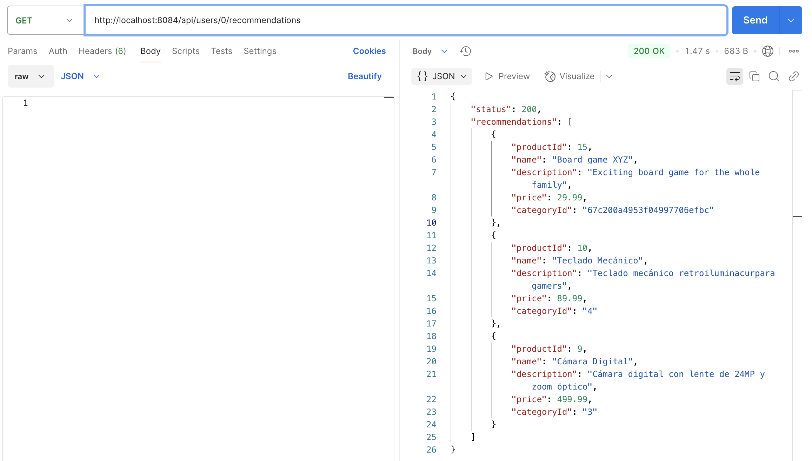
Vemos entonces que
John Doerecibe una recomendación deBoard game XYZ, el mismo producto que le gusta aAlice Smith. Esto se debe a queJohn Doesigue aAlice Smithy ambos tienen intereses similares. Podemos ver también en la vista de grafo de Neo4j cómo se relacionanAlice Smith,John Doey el productoBoard game XYZ.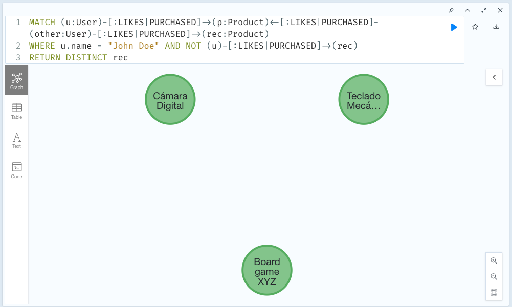
En esta otra figura se ve el origen de la recomendación, en la que se ve los prodcutos que le gustan y/o ha comprado
Alice Smithy aJohn Doecomo seguidor deAlice Smith, por lo que recibe el productoBoard game XYZse une a la recomendación.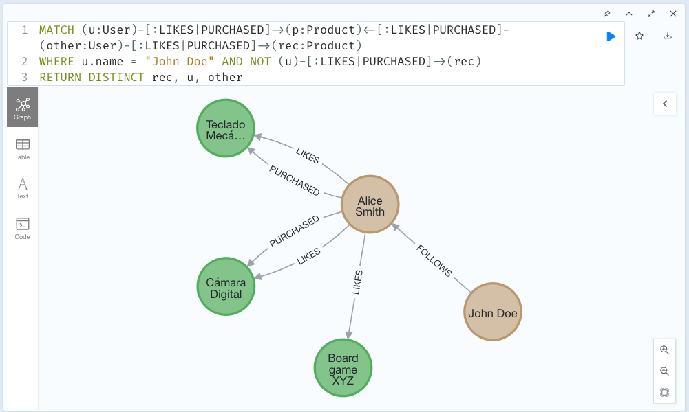
La API contiene más endpoints y funcionalidades que se pueden probar de forma similar. Estos ejemplos son sólo una muestra de cómo se pueden utilizar los endpoints de la API REST para interactuar con la base de datos Neo4j y la potencia que ofrece la combinación de ambas tecnologías para negocios de comercio electrónico.
Conclusiones#
En este tutorial se ha desarrollado una API REST utilizando Slim Framework y Neo4j para gestionar recomendaciones de productos en una actividad de comercio electrónico. A lo largo del proceso, se ha configurado un entorno de desarrollo con Docker y Docker Compose, implementado los endpoints necesarios para la API REST y probado la API con Postman.
Neo4j es una opción excelente para gestionar datos altamente conectados, como las interacciones entre usuarios y productos en un sistema de recomendaciones. La flexibilidad y potencia de Neo4j permiten modelar y consultar relaciones complejas de forma eficiente, lo que lo convierte en una herramienta ideal para aplicaciones de recomendaciones personalizadas. La combinación de Slim Framework y Neo4j permite desarrollar aplicaciones web rápidas y eficientes con una arquitectura RESTful.
Este proyecto no sólo proporciona una solución funcional para la gestión de recomendaciones de productos, sino que también sirve como punto de partida para el desarrollo de aplicaciones web más complejas y escalables. La API REST desarrollada en este tutorial puede ampliarse y personalizarse para adaptarse a las necesidades específicas, tanto en operaciones relacionadas con la naturaleza de los datos relacionados, como en la implementación de funcionalidades y características más propias del comercio electrónico.
Licencia#
Licencia CC BY-NC-ND 4.0
Copyright (c) 2025 [Manuel Torres - Departamento de Informática - Universidad de Almería]
Este proyecto está licenciado bajo la Licencia CC BY-NC-ND 4.0. Esto significa que puedes compartir el proyecto siempre que cites al autor, no lo uses para fines comerciales y no realices obras derivadas.